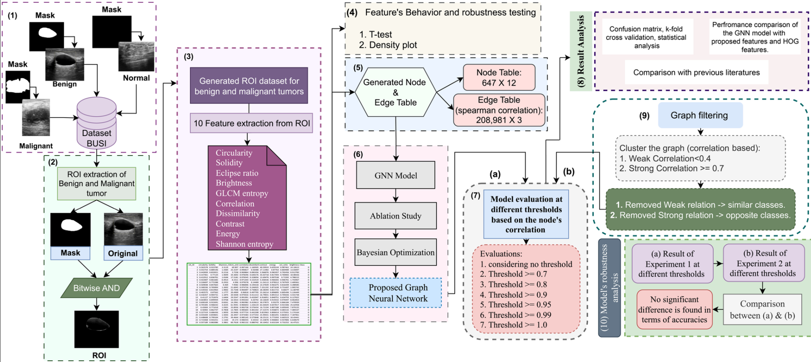
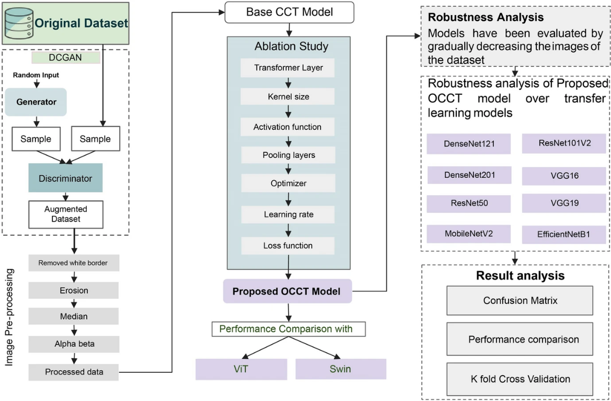
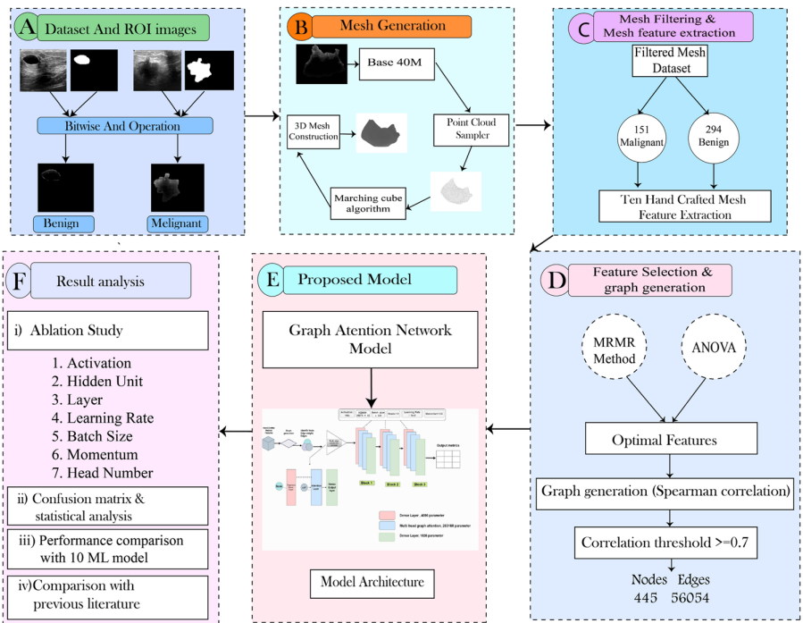
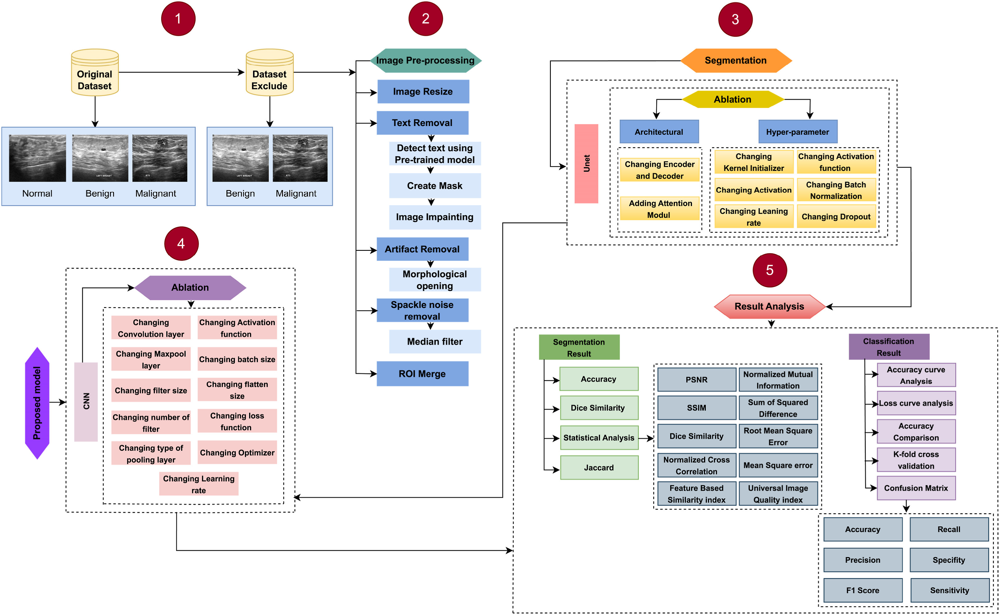
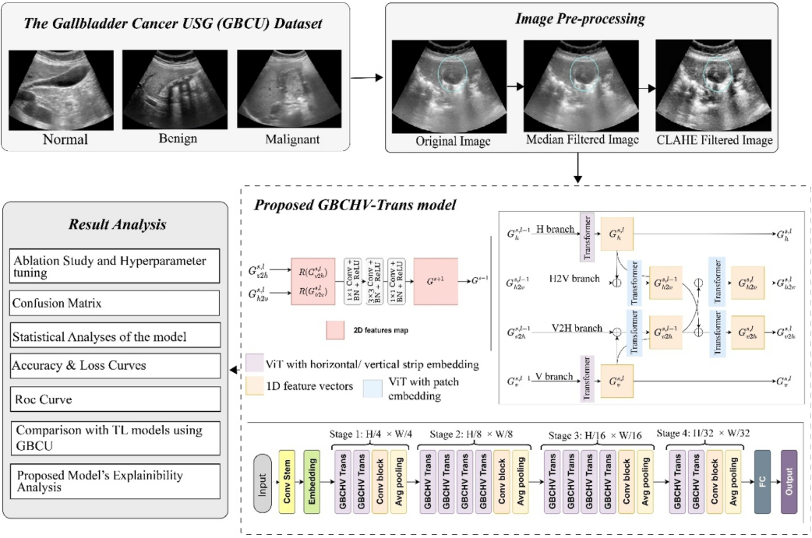

Sadia Sultana Chowa / ছোয়া
Dhaka, Bangladesh
I am a computer science engineer working remotely as a Consultant-Research Assistant affiliated with Charles Darwin University, Australia. I am currently advised by Prof. Sami Azam.
My research interests primarily focus on Computer Vision, Artificial Intelligence, and Large Language Models.
I completed a Bachelor's in Computer Science and Engineering from Daffodil International University, Bangladesh, where I worked on medical imaging, image enhancement, and machine learning under Dr. Zahid Hasan.
News
| Jan, 2025 | 📢 Published a first-author Q1 journal paper on eye disease diagnosis in Journal of Healthcare Informatics Research! 🧠📈 |
| Jan, 2025 | 📢 Published a first-author Q1 journal paper on Lung disease diagnosis in Scientific Reports! 🧠📈 |
| June, 2024 | 🏅 Recognition of Scholarly Publication in Reputed Indexed Journal. 📚🌟 |
| June, 2024 | 📝 First-author paper accepted in Journal of Imaging Informatics in Medicine! 🎉🧬 |
| Nov, 2023 | 📝 First-author paper accepted in Journal of Cancer Research and Clinical Oncology! 🎉🧬 |
| Jul, 2023 | 🌐 Joined Charles Darwin University as a remote Consultant-Research Assistant 👩💻 |
| Dec, 2022 | 🧠 Joined Health Informatics Research Lab (HIRL), Daffodil International University — working on medical data analysis with deep learning 🖥️📊 |
| Jan, 2022 | 🎓 Completed 3rd ELC course (Entrepreneurship, Leadership & Communication) at Sultan Agung Islamic University 💼🌱 |
Selected Publications





